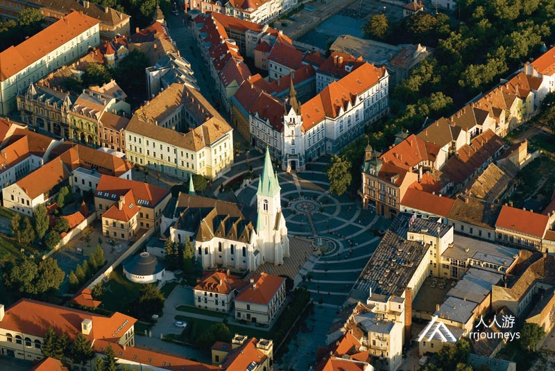
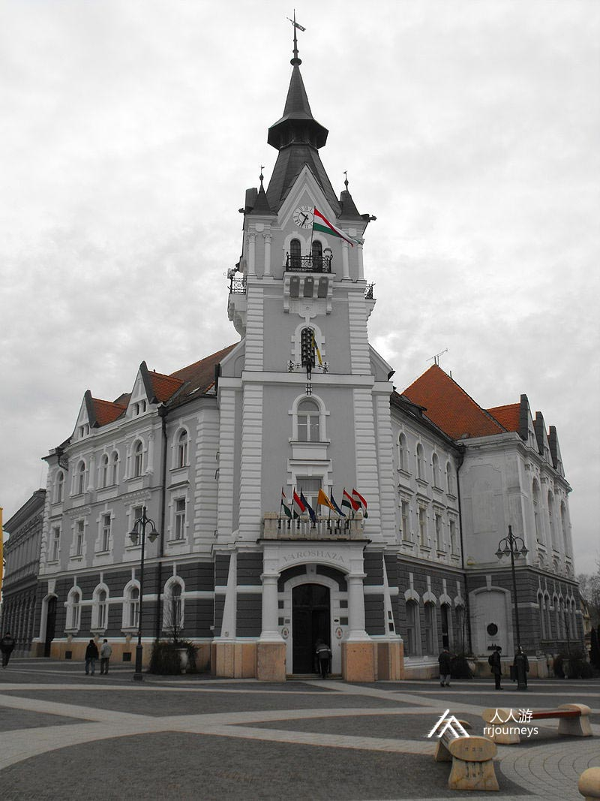
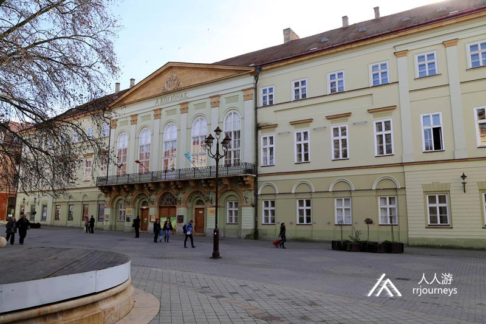
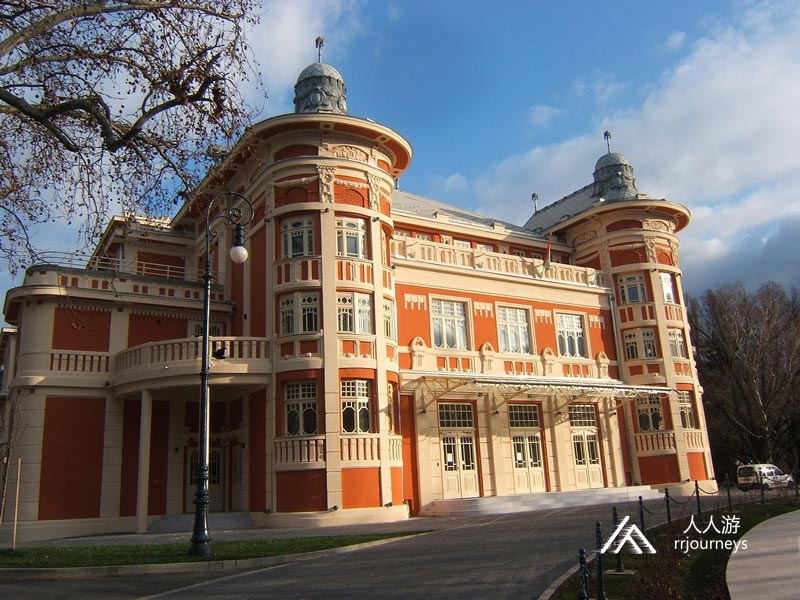
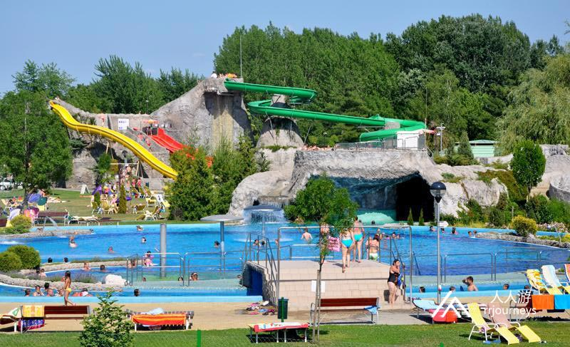
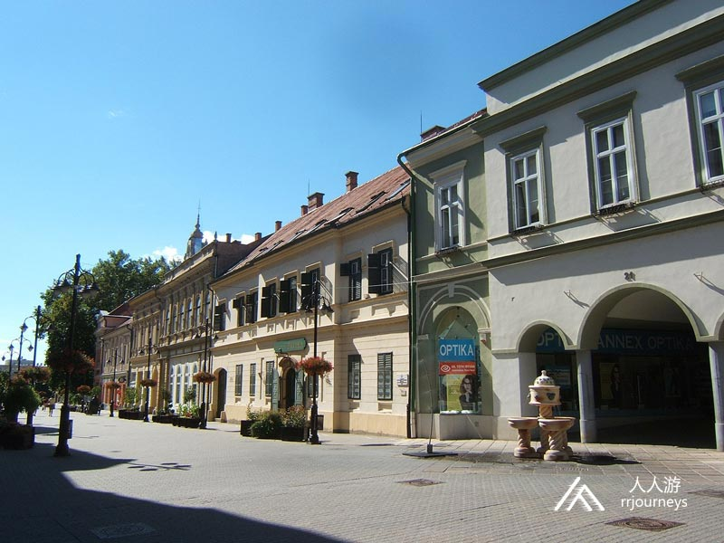
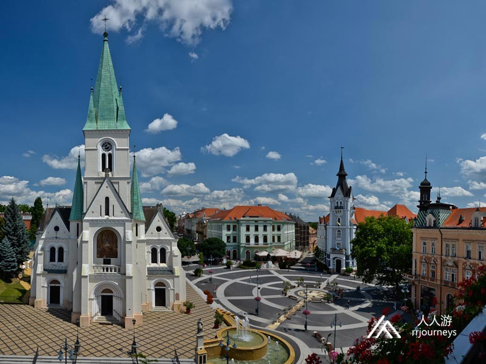
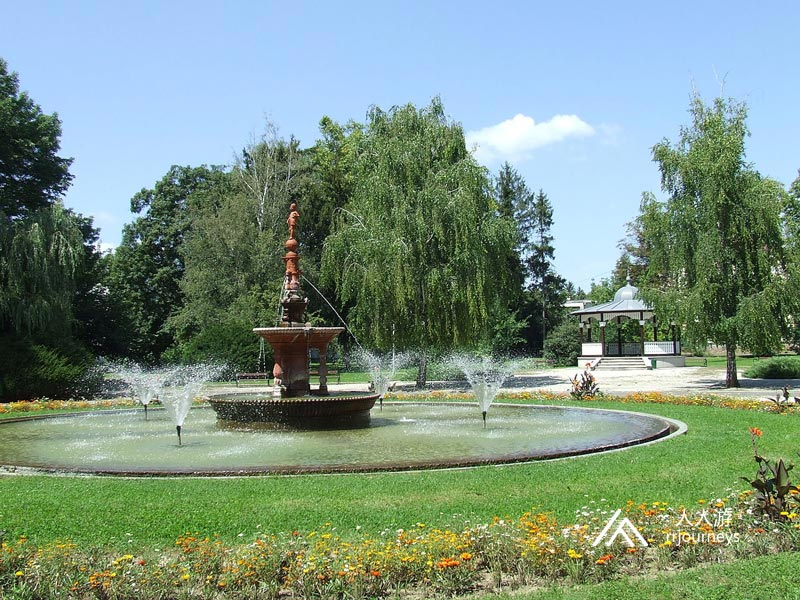

【美景】
科苏特广场是考波什堡的主广场。自2003年以来，它一直被认为是匈牙利最美丽的主要广场之一，2017年它在欧洲花卉城市和乡村大赛中被选为欧洲最美丽的主要广场。
5000年历史的考波什堡自1690年起就属于埃斯特哈齐家族，数个世纪以来该家族一直是匈牙利最具影响力、最富有的贵族之一。
【美食】
Goulash牛肉炖汤
Libamáj 鹅肝
Lángos特色油饼
Toltott Kaposzta 圆白菜肉丸
Halászlé 鱼汤
Ujhazi Tyukhuslevesi 家常老鸡汤
Kurtoskalacs 烟囱卷面包
Egri Bikavér埃格尔公牛血葡萄酒
考波什堡
考波什堡位于匈牙利西南部，是绍莫吉州的首府，距离首都布达佩斯约186公里，面积113.59平方公里，人口67,954人。这里设有大学城和主教座。大约在公元前五千年左右就已经有人居住在这个区域，史料表示大约400个凯尔特人定居在乡下。这座城市最早是在1009年的文件中被提及。从1061年起它就成为教堂的中心，然后在13世纪重建了城堡。考波什堡自1690年起就属于埃斯特哈齐家族。数个世纪以来该家族一直是匈牙利最具影响力、最富有的贵族之一。自17世纪起，该家族在哈布斯堡王朝和后来的奥匈帝国治下拥有大片土地。他们一直对哈布斯堡家族保持忠诚并于1626年获封伯爵。他们使考波什堡成为索莫吉的庄园的中心。1749年索莫吉井井有条地发展起来，创造了铁路和公路运输，重建了最重要的公共机构，渐渐地人口也稳定增长起来。  景点：市政厅 从19世纪末开始，考波什堡开始迅速发展，人口在短时间内成倍增加，因此决定建造一个新的市政厅。市政厅建于1902年，它的设计是在32部作品中精心挑选的，随后的几十年里一直有着翻新，修建的举动。2002年，市长决定将18个计算机控制的铃铛组成的铃铛游戏放在塔上，每小时播放一首旋律。2014年还对当时具有110年历史的彩色玻璃窗进行了翻新。如今这座建筑是市政府的机关和办公室。  景点：县政厅 索莫吉县政厅是1749年考波什堡成为索莫吉县的中心所在地，1752年始建的第一座地下的建筑，巴洛克风格，1770年进行了扩建和改建，但对于发展中的县来说仍然是不够的。1820年代开始建造新的建筑，奠基石于1828年6月30日奠基，但1832年5月1日才举行揭幕典礼。 这里发生了许多重要的演讲和活动。1852年6月28日在革命失败的几年后，弗朗兹·约瑟夫皇帝来到这里受到冷遇。1830年第一家印刷厂在这里经营，20世纪初，卡波什瓦尔的皇家法院分支机构也被设立在这。2010年为纪念索莫吉县大主教费伦茨·塞切尼伯爵，这位匈牙利国家博物馆和塞切尼国家图书馆的创始人而制作的纪念性匾额在建筑物的西墙上揭幕。重建和翻新工程于2015年完成，并对外开放。  景点：大剧院 大剧院位于考波什堡市，是全国规模最大，最著名的剧院之一。剧院具有109年的历史，是匈牙利新艺术运动风格的杰出作品，是该时代杰出的建筑作品。大剧院仅可容纳860人，但这足以使其成为最出色的剧院。自2017年1月以来，该建筑经历了将近3年的全面翻新，改建和扩建，安装了新的现代化舞台设备，以前的黄色外墙颜色被砖红色代替，就像在20世纪初重建时一样。维克托·奥尔班总理出席了2019年11月11日举行的交接的仪式。  景点：圣母升天大教堂 圣母升天大教堂是考波什堡教区的教堂，也是全国最大的教堂之一。建于1886年，是新罗马建筑的标志之一，长45.5米，宽22米。大教堂是匈牙利西南部最高的建筑，63米高的主塔高耸在立面中间的城市上空。大楼的四角还有四个细长的金字塔，主立面的每一侧都有塔楼，主入口的拱顶呈封闭的半圆形，在其上方是壁画。 教堂内部宽敞，主教堂中殿带有两个过道。大教堂的内部被其文艺复兴时期的基座隔开，在中殿的尽头是由五个边围成的圣所。内部的彩色玻璃窗也是杰尔吉·来斯柯夫斯基的作品。 景点：花浴 考波什堡的花浴，是跨丹比阿最大的连续水浴，带室内和室外游泳池，水疗中心，海滩浴及药用水的温泉浴。1967年在老城区的海滩浴区发现了药用水，几口井的深度为671-1084米，水温为51-55°C。药用水是碱性氯化物和碳酸氢盐热水，其中也包含偏硅酸以及溴离子、碘离子和氟离子。作为水疗疗法，它适用于治疗肌肉骨骼疾病、风湿性疾病、血栓形成后的状况、肌肉拉伸、肌肉无力、骨折、软骨损伤和意外伤害等，但也可以有效地用于妇科治疗，它还可以用作治疗胃炎，肠粘膜炎和胆汁疾病的药物治疗。 考波什堡城市浴场是在温泉水的基础上建造的，距市中心10-15分钟，在考波什河旁的树林旁的景观区。游泳池和温泉浴场已经运营了数十年，并设有室内和室外游泳池。 花浴是跨丹比阿最大的体验浴，水面面积为3462平方米。在夏季，它等待着对17种视觉元素感兴趣的人们，背部扩散器、水伞、颈部淋浴、石像鬼、皮带淋浴、蜂鸣器、间歇泉、神风敢死队滑梯、家庭滑梯、蟒蛇、洞穴滑梯、轻型食人鱼食堂、洞穴瀑布、水幕、漂移走廊和水真菌等。儿童可以在单独的儿童游泳池中沐浴。除了冒险池外，城市浴池还设有50 m的8水道和25 m的5水道游泳池，以及带有药用水的温泉浴。  景点：主要街道 卡波什堡大街是该城市历史和文化重要街道，它曾经是穿越居住点的东西方向的乡村道路。1987年将主干道的西部部分转变为步行街，沿街有5处古迹和许多受当地保护的建筑物。2010年，它与科苏特广场一起获得了匈牙利最美丽的主广场和大街奖。土耳其人被驱逐后，考波什堡几乎完全被摧毁。在18世纪初，在科苏特广场附近建立了新的城市中心。1777年创建的可在地图上查到的费伦茨·罗萨斯街。这条街还显示在1778年左右的水文地图上，地图的东端还标出了一个十字架。第二次军事调查是在1850年的卡波什瓦尔部分进行的，那里的弗特街大致到达了今天的梅泽街。另一方面，1855年的城市地图显示，当前的安娜大街，哈拉法大街，阿迪街长期以来一直是主街的一部分。  景点：科苏特广场 科苏特广场是考波什堡的主广场，自2003年进行装修以来，它一直被认为是匈牙利最美丽的主要广场之一。2010年它与主街一起赢得了最美丽的主广场和大街奖， 2017年它在欧洲花卉城市和乡村大赛中被选为欧洲最美丽的主要广场。科苏特广场的建筑物主要是折衷主义风格或带有新艺术风格的特点，建于19世纪末。大街于1987年禁止车辆通行。科苏特广场-作为步行街和周围街道的延续-于2003年进行了装修。作为翻新工作的一部分，它配有装饰性覆盖物，华丽的烛台，长凳和穿越整个空间的喷泉组合。  景点:伯兹尼公园 考波什堡的伯兹尼公园是该市最重要的公园之一，建于20世纪初，被用作军事训练场和称为“ 翁维德广场”的机场。1920年代中期该地区进行了重建，修建了新公园和学校。新公园还是全国农业和工业展览会的场所。二战后苏联红军还入侵了考波什堡，他们还下令在这个公园竖立一座纪念碑，以纪念他们的英勇牺牲者，一个24米高的纪念柱建在被强行拆除的音乐馆的场地。1996年政府对其进行了翻新。公园在接下来的几年里增添了新的纪念碑，建造了“ 儿童微笑 ”中央游乐场。  景点：彩虹文化宫 彩虹文化宫在考波什堡是文化生活中最重要的地方之一。该建筑是受国家保护的古迹，建于1927年，具有新艺术运动风格和装饰艺术风格，拥有821个座位。它的装饰元素混合了匈牙利和外国的图案，主要是埃及艺术的元素。入口上方的弯曲树冠由于其形状而通常被称为“拿破仑的帽子”，与该市的另一个变压器房的建筑的形状与装饰完全相同。2009年，电影院被宣布为国家受保护的古迹。2010年秋天完成了对其的全面翻新和重建。每年八月考波什堡国际室内音乐节在这里举行。